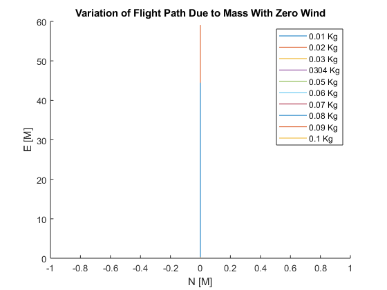
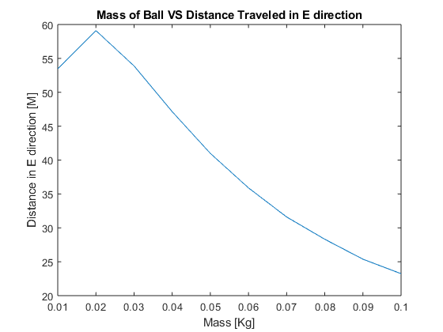
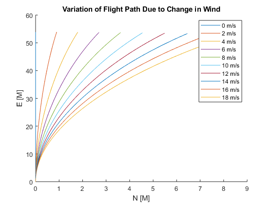
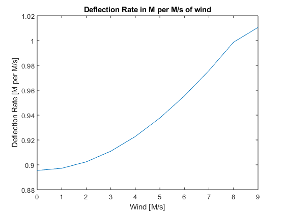

clear all;
close all;
clc
global g cd m D N_0 E_0 D_0 vN_0 vE_0 vD_0 rho area q_0 V_E0 R_E W
g = 9.81;
cd = 0.6;
m = .03;
D = 3e-2;
V_E0 = [0 20 -20];
R_E = [0 0 0];
W = [0 0 0];
rho = 1.225;
area = pi*(D/2)^2;
KE = .5*m*(norm(V_E0)^2);
m = .01;
distance = [];
mass = [];
for i = 1:10
V = (KE*2)/m;
V = sqrt(V/2);
V_E0 = [0 V -V];
inish_condish = [V_E0 R_E];
tspan = [0 5];
options = odeset('MaxStep', 10^-1);
[t, y] = ode45('golfball_fun',tspan,inish_condish,options);
ground = find(-y(:,6)<0);
ground = ground(1) - 1;
vn = y(1:ground,1);
ve = y(1:ground,2);
vd = -y(1:ground,3);
n = y(1:ground,4);
e = y(1:ground,5);
d = -y(1:ground,6);
figure(1)
hold on
plot3(n,e,d)
xlabel('N [M]')
ylabel('E [M]')
zlabel('-D [M]')
title('Variation of Flight Path Due to Mass With Zero Wind')
legend('0.01 Kg','0.02 Kg','0.03 Kg','0304 Kg','0.05 Kg','0.06 Kg','0.07 Kg','0.08 Kg','0.09 Kg','0.1 Kg')
mass = [mass m];
m = m + .01;
distance = [distance e(end)];
end
m = .03;
figure(3)
grid on
grid minor
plot(mass,distance)
title('Mass of Ball VS Distance Traveled in E direction')
xlabel('Mass [Kg]')
ylabel('Distance in E direction [M]')
deflection = [];
wind_vec = [];
V_E0 = [0 20 -20];
for i = 1:10
inish_condish = [V_E0 R_E];
tspan = [0 5];
options = odeset('MaxStep', 10^-1);
[t, y] = ode45('golfball_fun',tspan,inish_condish,options);
ground = find(-y(:,6)<0);
ground = ground(1) - 1;
vn = y(1:ground,1);
ve = y(1:ground,2);
vd = -y(1:ground,3);
n = y(1:ground,4);
e = y(1:ground,5);
d = -y(1:ground,6);
figure(2)
hold on
plot3(n,e,d)
xlabel('N [M]')
ylabel('E [M]')
zlabel('-D [M]')
title('Variation of Flight Path Due to Change in Wind')
legend('0 m/s','2 m/s','4 m/s','6 m/s','8 m/s','10 m/s','12 m/s','14 m/s','16 m/s','18 m/s')
wind_vec = [wind_vec W(1)];
deflection = [deflection n(end)];
W(1) = W(1) + 1;
end
chenge = gradient(deflection,wind_vec);
figure(4)
plot(wind_vec,chenge)
title('Deflection Rate in M per M/s of wind')
xlabel('Wind [M/s]')
ylabel('Deflection Rate [M per M/s]')
Warning: Ignoring extra legend entries.
Warning: Ignoring extra legend entries.
Warning: Ignoring extra legend entries.
Warning: Ignoring extra legend entries.
Warning: Ignoring extra legend entries.
Warning: Ignoring extra legend entries.
Warning: Ignoring extra legend entries.
Warning: Ignoring extra legend entries.
Warning: Ignoring extra legend entries.
Warning: Ignoring extra legend entries.
Warning: Ignoring extra legend entries.
Warning: Ignoring extra legend entries.
Warning: Ignoring extra legend entries.
Warning: Ignoring extra legend entries.
Warning: Ignoring extra legend entries.
Warning: Ignoring extra legend entries.
Warning: Ignoring extra legend entries.
Warning: Ignoring extra legend entries.
   